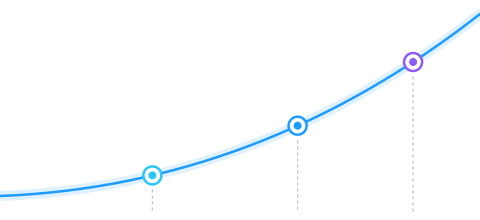

<!doctype html>
<html lang="de"><head><meta charset="utf-8"><title>Markentrix · Vorschläge für die neue CI</title>
<style>
@font-face{font-family:'Space Grotesk';font-weight:600;src:url(../src/fonts/space-grotesk-latin-600-normal.woff2)}
@font-face{font-family:'Space Grotesk';font-weight:700;src:url(../src/fonts/space-grotesk-latin-700-normal.woff2)}
@font-face{font-family:'Inter';font-weight:400;src:url(../src/fonts/inter-latin-400-normal.woff2)}
@font-face{font-family:'Inter';font-weight:500;src:url(../src/fonts/inter-latin-500-normal.woff2)}
@font-face{font-family:'Inter';font-weight:600;src:url(../src/fonts/inter-latin-600-normal.woff2)}
@font-face{font-family:'Inter';font-weight:700;src:url(../src/fonts/inter-latin-700-normal.woff2)}
@font-face{font-family:'Archivo';font-weight:600;src:url(fonts/archivo-latin-600-normal.woff2)}
@font-face{font-family:'Archivo';font-weight:700;src:url(fonts/archivo-latin-700-normal.woff2)}
@font-face{font-family:'Archivo';font-weight:800;src:url(fonts/archivo-latin-800-normal.woff2)}
@font-face{font-family:'Source Sans 3';font-weight:400;src:url(fonts/source-sans-3-latin-400-normal.woff2)}
@font-face{font-family:'Source Sans 3';font-weight:600;src:url(fonts/source-sans-3-latin-600-normal.woff2)}
@font-face{font-family:'IBM Plex Sans';font-weight:400;src:url(fonts/ibm-plex-sans-latin-400-normal.woff2)}
@font-face{font-family:'IBM Plex Sans';font-weight:500;src:url(fonts/ibm-plex-sans-latin-500-normal.woff2)}
@font-face{font-family:'IBM Plex Sans';font-weight:600;src:url(fonts/ibm-plex-sans-latin-600-normal.woff2)}
@font-face{font-family:'IBM Plex Sans';font-weight:700;src:url(fonts/ibm-plex-sans-latin-700-normal.woff2)}
@font-face{font-family:'IBM Plex Mono';font-weight:400;src:url(fonts/ibm-plex-mono-latin-400-normal.woff2)}
@font-face{font-family:'IBM Plex Mono';font-weight:500;src:url(fonts/ibm-plex-mono-latin-500-normal.woff2)}
@page{size:A4 landscape;margin:0}
*{box-sizing:border-box}
html,body{margin:0;background:#fff}
body{font-family:Inter,sans-serif;font-size:11px;line-height:1.5;color:#2A2F3A;-webkit-print-color-adjust:exact;print-color-adjust:exact}
.page{width:1123px;height:794px;padding:38px 44px 0;position:relative;overflow:hidden;page-break-after:always;background:#FBFBFA}
.top{display:flex;justify-content:space-between;font-size:8.5px;font-weight:600;letter-spacing:.08em;text-transform:uppercase;color:#7A8090;padding-bottom:10px;border-bottom:1px solid #E4E6EA;margin-bottom:22px}
.foot{position:absolute;left:44px;right:44px;bottom:20px;display:flex;justify-content:space-between;font-size:8.5px;font-weight:600;letter-spacing:.08em;text-transform:uppercase;color:#7A8090}
h1{font-size:30px;line-height:1.1;letter-spacing:-.02em;margin:0 0 8px;color:#14171F;font-weight:700}
h2{font-size:14px;margin:0 0 6px;color:#14171F;font-weight:700}
h3{font-size:11px;margin:0 0 3px;color:#14171F;font-weight:700}
p{margin:0 0 6px}
.lead{font-size:13px;max-width:760px;margin-bottom:18px}
.lab{font-size:8px;font-weight:700;letter-spacing:.09em;text-transform:uppercase;color:#7A8090;display:block;margin-bottom:6px}
.box{background:#fff;border:1px solid #E4E6EA;border-radius:10px;padding:13px 15px}
ul{margin:0;padding:0;list-style:none}li{position:relative;padding-left:12px;margin-bottom:4px}li:before{content:'';position:absolute;left:0;top:.55em;width:4px;height:4px;border-radius:50%;background:#14171F}
.cols{display:grid;gap:14px}
.dir{display:grid;grid-template-columns:270px 1fr;gap:26px}
.nr{font-size:9px;font-weight:700;letter-spacing:.1em;text-transform:uppercase;color:#7A8090}
.sws{display:flex;gap:6px;margin:4px 0 2px}.sws div{flex:1}.sws i{display:block;height:34px;border-radius:6px;border:1px solid rgba(0,0,0,.08)}.sws span{display:block;font-size:7.5px;line-height:1.3;margin-top:4px;color:#555}
.sws b{display:block;color:#14171F;font-size:8px}
.mocks{display:grid;grid-template-columns:1.72fr 1fr;grid-template-rows:auto auto;gap:12px}
.m{border-radius:10px;position:relative;overflow:hidden;border:1px solid rgba(0,0,0,.09)}
.hero{height:276px;padding:14px 20px}
.nav{display:flex;align-items:center;gap:11px;font-size:8px;font-weight:500;margin-bottom:26px}
.nav .sp{flex:1}
.post{height:276px;padding:20px}
.row2{grid-column:1/3;display:grid;grid-template-columns:1fr 1fr 1fr;gap:12px}
.tile{height:128px;display:flex;align-items:center;justify-content:center}
.card{height:128px;padding:14px 16px}
.pm{display:grid;grid-template-columns:1fr 1fr 1fr;gap:12px;margin-top:12px}
.pm .box{padding:10px 13px}
table{width:100%;border-collapse:collapse}th{text-align:left;font-size:8px;letter-spacing:.08em;text-transform:uppercase;color:#7A8090;padding:0 8px 7px 0;border-bottom:1px solid #E4E6EA}
td{padding:8px 8px 8px 0;border-bottom:1px solid #E4E6EA;vertical-align:top}
.dots i{display:inline-block;width:9px;height:9px;border-radius:50%;background:#D9DCE2;margin-right:3px}.dots i.on{background:#14171F}
.rec{background:#14171F;color:#fff;border-radius:10px;padding:14px 16px}.rec h2,.rec b{color:#fff}
</style></head><body>
<div id="root"></div>
<script>
const MARK=(m,a,w)=>`<svg viewBox="0 0 522 447" style="width:${w}px;flex:none;display:block"><g fill="none" stroke-linecap="round" stroke-linejoin="round"><path stroke="${a}" stroke-width="54" d="M414 107.5 495 27M415 27h80v80.5"/><path stroke="${m}" stroke-width="82" d="M41 406V107.5L227.5 277.5 414 107.5V406"/></g></svg>`;
const T={
 heute:{nr:'Heute',name:'Bestand',paper:'#F8FAFC',surf:'#fff',ink:'#0B1020',text:'#2C3446',muted:'#667085',pri:'linear-gradient(110deg,#28C7F7,#1E9BFF)',priText:'#0B1020',line:'#E3E7ED',fh:"'Space Grotesk'",fhw:700,ls:'-.02em',fb:'Inter',r:10,
  mark:w=>``,markDk:w=>``,dark:'#0B1020',dkText:'#fff',
  hl:t=>`<span style="box-shadow:inset 0 -.3em 0 rgba(40,199,247,.42)">${t}</span>`,
  sig:(w)=>``,heroBg:''},
 klar:{nr:'Vorschlag 1',name:'Klar',paper:'#F7F9FC',surf:'#fff',ink:'#0B1020',text:'#2C3446',muted:'#5B6475',pri:'#1F5EFF',priText:'#fff',line:'#E1E6EE',fh:"'Space Grotesk'",fhw:700,ls:'-.02em',fb:'Inter',r:10,
  mark:w=>MARK('#0B1020','#1F5EFF',w),markDk:w=>MARK('#fff','#6E9BFF',w),dark:'#0B1020',dkText:'#fff',
  hl:t=>`<span style="box-shadow:inset 0 -.3em 0 #CFDEFF">${t}</span>`,
  sig:(w)=>`<svg viewBox="0 0 240 90" style="width:${w}px;display:block" fill="none" stroke="#1F5EFF" stroke-width="4" stroke-linecap="round" stroke-linejoin="round"><path d="M4 84C80 82 150 62 222 12"/><path d="M196 10h28v28"/></svg>`,heroBg:''},
 werk:{nr:'Vorschlag 2',name:'Vor Ort',paper:'#F4EFE6',surf:'#FFFDF8',ink:'#1E1C19',text:'#3A362F',muted:'#625C53',pri:'#C93A17',priText:'#fff',line:'#DDD5C6',fh:'Archivo',fhw:800,ls:'-.025em',fb:"'Source Sans 3'",r:4,
  mark:w=>MARK('#1E1C19','#C93A17',w),markDk:w=>MARK('#F4EFE6','#F0623D',w),dark:'#1E1C19',dkText:'#F4EFE6',
  hl:t=>`<span style="box-shadow:inset 0 -.14em 0 #C93A17">${t}</span>`,
  sig:(w)=>`<svg viewBox="0 0 240 90" style="width:${w}px;display:block" fill="none" stroke="#C93A17" stroke-width="5" stroke-linecap="round" stroke-linejoin="round"><path d="M4 84C80 82 150 62 222 12"/><path d="M194 10h30v30"/></svg>`,heroBg:''},
 blau:{nr:'Vorschlag 3',name:'Blaupause',paper:'#FFFFFF',surf:'#fff',ink:'#0F1E45',text:'#2A3350',muted:'#55607A',pri:'#1B3FA0',priText:'#fff',line:'#D8E0F0',fh:"'IBM Plex Sans'",fhw:700,ls:'-.02em',fb:"'IBM Plex Sans'",r:2,
  mark:w=>MARK('#1B3FA0','#1B3FA0',w),markDk:w=>MARK('#fff','#FFD60A',w),dark:'#1B3FA0',dkText:'#fff',
  hl:t=>`<span style="background:#FFD60A;padding:0 .12em;margin:0 -.06em">${t}</span>`,
  sig:(w)=>`<svg viewBox="0 0 240 44" style="width:${w}px;display:block" fill="none" stroke="#1B3FA0" stroke-width="1.4"><path d="M6 6v30M234 6v30M6 21h228M6 21l9-5M6 21l9 5M234 21l-9-5M234 21l-9 5"/><rect x="72" y="12" width="96" height="18" fill="#fff" stroke="none"/><text x="120" y="25" font-family="IBM Plex Mono" font-weight="500" font-size="10" fill="#1B3FA0" stroke="none" text-anchor="middle">+ ANFRAGEN</text></svg>`,
  heroBg:'background-image:linear-gradient(#E9EEF8 1px,transparent 1px),linear-gradient(90deg,#E9EEF8 1px,transparent 1px);background-size:16px 16px;'}
};
const logo=(t,h,dk)=>`<div style="display:flex;align-items:flex-end;gap:${h*.36}px">${(dk?t.markDk:t.mark)(h*1.168)}<span style="font-family:${t.fh};font-weight:${t.fhw>700?800:700};font-size:${h*.86}px;line-height:1;margin-bottom:${-h*.115}px;letter-spacing:${t.fhw>700?'-.02em':'0'};color:${dk?t.dkText:t.ink}">Markentrix</span></div>`;
const btn=(t,x,sec,s=1)=>`<span style="display:inline-flex;align-items:center;height:${30*s}px;padding:0 ${13*s}px;border-radius:${t.r}px;font-family:${t.fb};font-weight:600;font-size:${10.5*s}px;white-space:nowrap;${sec?`background:${t.surf};border:1px solid ${t.ink};color:${t.ink}`:`background:${t.pri};color:${t.priText}`}">${x}</span>`;
function mocks(k){const t=T[k];return `<div class="mocks">
 <div class="m hero" style="background-color:${t.paper};${t.heroBg}color:${t.text};font-family:${t.fb}">
  <div class="nav" style="color:${t.ink}">${logo(t,15)}<span class="sp"></span><span>Leistungen</span><span>Preise</span>${k=='heute'?'':'<span>Referenzen</span>'}<span>Kontakt</span>${btn(t,'Termin buchen',0,.72)}</div>
  <div style="font-family:${t.fh};font-weight:${t.fhw};font-size:38px;line-height:1.04;letter-spacing:${t.ls};color:${t.ink};margin-bottom:10px">Websites, die<br>${t.hl('Anfragen')} bringen.</div>
  <div style="font-size:12.5px;line-height:1.45;max-width:285px;margin-bottom:14px">Für Betriebe, die mehr Kunden wollen und keine Zeit für Technik haben.</div>
  <div style="display:flex;gap:8px">${btn(t,'Website-Check starten')}${btn(t,'Erstgespräch buchen',1)}</div>
  ${k=='heute'?'':`<div style="position:absolute;right:20px;bottom:${k=='blau'?11:22}px">${t.sig(k=='blau'?190:120)}</div>`}
 </div>
 <div class="m post" style="background-color:${k=='werk'?t.dark:t.paper};${k=='blau'?t.heroBg:''}color:${k=='werk'?t.dkText:t.text};font-family:${t.fb}">
  <div style="font-family:${t.fh};font-weight:${t.fhw};font-size:31px;line-height:1.05;letter-spacing:${t.ls};color:${k=='werk'?t.dkText:t.ink};margin-bottom:10px">Mehr Anfragen.<br>${k=='werk'?`<span style="color:#F0623D">Weniger Aufwand.</span>`:t.hl('Weniger Aufwand.')}</div>
  <div style="font-size:12px;line-height:1.45;max-width:200px">Ihre Website arbeitet, während Sie im Laden stehen.</div>
  <div style="position:absolute;left:20px;bottom:18px">${logo(t,17,k=='werk')}</div>
  <div style="position:absolute;right:18px;bottom:${k=='werk'?17:k=='blau'?15:k=='heute'?46:16}px">${k=='werk'?T.werk.sig(84).replaceAll('#1E1C19','#F4EFE6').replaceAll('#C93A17','#F0623D'):t.sig(k=='heute'?104:k=='klar'?84:112)}</div>
 </div>
 <div class="row2">
  <div class="m card" style="background:${t.surf};font-family:${t.fb};color:${t.text}">${logo(t,15)}
   <div style="position:absolute;left:16px;bottom:14px"><div style="font-family:${t.fh};font-weight:700;font-size:12px;color:${t.ink}">Christian Wien</div><div style="font-size:9px;color:${t.muted};margin-bottom:5px">Inhaber</div><div style="font-size:9px;font-family:${k=='blau'?"'IBM Plex Mono'":t.fb}">0176 20370429 · info@markentrix.de</div></div>
   <div style="position:absolute;right:16px;top:22px;width:26px;height:3px;background:${t.pri}"></div></div>
  <div class="m tile" style="background:${t.dark}">${logo(t,22,1)}</div>
  <div class="m card" style="background:${t.surf};font-family:${t.fb};color:${t.text}">
   <div style="font-size:8px;font-weight:600;letter-spacing:.08em;text-transform:uppercase;color:${t.muted};font-family:${k=='blau'?"'IBM Plex Mono'":t.fb}">Landingpage</div>
   <div style="font-family:${k=='heute'||k=='klar'?'Inter':k=='blau'?"'IBM Plex Mono'":t.fh};font-weight:${k=='blau'?500:700};font-size:30px;line-height:1.15;color:${t.ink};letter-spacing:-.02em;font-feature-settings:'tnum'">599 €</div>
   <div style="font-size:10px;margin-bottom:8px">einmalig, zzgl. 29,99 € im Monat</div>${btn(t,'Angebot sichern',0,.8)}</div>
 </div></div>`}
function sw(list){return `<div class="sws">${list.map(([n,h])=>`<div><i style="background:${h}"></i><span><b>${n}</b>${h}</span></div>`).join('')}</div>`}
function dirPage(k,o){const t=T[k];return `<section class="page"><div class="top"><span>Markentrix · Vorschläge für die neue CI</span><span>${t.nr}</span></div>
 <div class="dir"><div>
  <div class="nr">${t.nr}</div><h1 style="font-family:${t.fh};font-weight:${t.fhw};letter-spacing:${t.ls};font-size:40px;color:${t.ink}">${t.name}</h1>
  <p style="font-size:12.5px;margin-bottom:14px">${o.idee}</p>
  <span class="lab">Farben</span>${sw(o.farben)}
  <span class="lab" style="margin-top:12px">Schrift</span>
  <div style="font-family:${t.fh};font-weight:${t.fhw};font-size:22px;line-height:1.1;color:${t.ink};letter-spacing:${t.ls}">${o.fontH}</div>
  <div style="font-family:${t.fb};font-size:12px;color:${t.text};margin:3px 0 12px">${o.fontB}</div>
  <span class="lab">Wiedererkennung</span><p>${o.sig}</p>
  <span class="lab" style="margin-top:10px">Logo</span><p style="margin:0">${o.logo}</p>
 </div><div>${mocks(k)}
  <div class="pm"><div class="box"><h3>Stärken</h3><ul>${o.plus.map(x=>`<li>${x}</li>`).join('')}</ul></div><div class="box"><h3>Risiken</h3><ul>${o.minus.map(x=>`<li>${x}</li>`).join('')}</ul></div><div class="box"><h3>Aufwand der Umstellung</h3><p style="margin:0">${o.aufwand}</p></div></div>
 </div></div><div class="foot"><span>Zur Freigabe · noch nichts umgesetzt</span><span>${o.p} / 5</span></div></section>`}
const d=(n)=>`<span class="dots">${[1,2,3,4,5].map(i=>`<i class="${i<=n?'on':''}"></i>`).join('')}</span>`;
document.getElementById('root').innerHTML=`
<section class="page"><div class="top"><span>Markentrix · Vorschläge für die neue CI</span><span>Ausgangslage</span></div>
 <h1>Warum der Auftritt heute austauschbar wirkt</h1>
 <p class="lead" style="max-width:900px;margin-bottom:14px">Jedes einzelne Element ist sauber gemacht. Zusammen ergeben sie aber genau das Bild, das Website-Baukästen und KI-Werkzeuge als Standard ausgeben. Drei Vorschläge zeigen, wie sich das ändern lässt. Umgesetzt wird erst nach deiner Freigabe.</p>
 <div class="cols" style="grid-template-columns:1fr 1.42fr">
  <div>
   <div class="box"><h2>Die sechs Signale für „Standard“</h2><table>
    <tr><td style="width:42%"><b>Cyan-Violett-Verlauf</b></td><td>Das meistbenutzte Erkennungszeichen von KI- und Software-Produkten.</td></tr>
    <tr><td><b>Navy als Grundfarbe</b></td><td>Die Standardwahl jeder Digitalagentur.</td></tr>
    <tr><td><b>Space Grotesk + Inter</b></td><td>Die häufigste Schriftpaarung in Vorlagen der letzten Jahre.</td></tr>
    <tr><td><b>Kurve mit Leuchtpunkten</b></td><td>Wachstumskurven nutzt fast jede Marketing-Agentur.</td></tr>
    <tr><td><b>Fünf Akzentfarben</b></td><td>Cyan, Blau, Violett, Magenta und Verlauf: nichts davon bleibt hängen.</td></tr>
    <tr><td style="border:0"><b>Kein Bezug zum Kunden</b></td><td style="border:0">Nichts am Auftritt wirkt lokal oder persönlich.</td></tr></table></div>
   <div class="cols" style="grid-template-columns:1fr 1fr;margin-top:12px">
    <div class="box"><h2>Bleibt in allen Vorschlägen</h2><ul><li>Die Form des Logos: M mit Pfeil</li><li>Der Name und seine Schreibweise</li><li>Der helle Grundton</li><li>Die klare, direkte Sprache</li></ul></div>
    <div class="box"><h2>Fällt in allen Vorschlägen</h2><ul><li>Der Cyan-Violett-Verlauf</li><li>Violett und Magenta</li><li>Die Wachstumskurve</li><li>Punktraster und Glühen</li></ul></div>
   </div>
  </div>
  <div><span class="lab">So sieht es heute aus</span>${mocks('heute')}</div>
 </div><div class="foot"><span>Zur Freigabe · noch nichts umgesetzt</span><span>1 / 5</span></div></section>
${dirPage('klar',{p:2,idee:'Die behutsame Lösung. Der Auftritt bleibt, wie er ist, verliert aber alles, was nach Vorlage aussieht: ein einziges, kräftiges Blau statt Verlauf und fünf Akzentfarben.',
 farben:[['Navy','#0B1020'],['Markentrix-Blau','#1F5EFF'],['Hellblau','#CFDEFF'],['Papier','#F7F9FC']],fontH:'Space Grotesk',fontB:'Inter für Text und Preise (unverändert)',
 sig:'Die <b>Aufwärtslinie</b>: eine einzelne Linie, die im Pfeil des Logos endet. Dazu der Marker in Hellblau.',logo:'Form unverändert. M in Navy, Pfeil in Blau, ohne Verlauf.',
 plus:['Kunden erkennen Markentrix sofort wieder','Wirkt aufgeräumter und erwachsener','Funktioniert einfarbig und im Druck'],minus:['Bleibt eine blaue Digitalagentur','Schriften bleiben die üblichen','Größter Schritt ist nur das Weglassen'],aufwand:'<b>Klein.</b> Farben und Logo-Dateien tauschen, Website-Variablen anpassen. Etwa ein bis zwei Tage.'})}
${dirPage('werk',{p:3,idee:'Die Lösung, die nach Betrieben vor Ort aussieht, egal welcher Branche. Warmes Papier, Tinte und ein Signalrot. Kräftige Schrift wie auf einem Ladenschild.',
 farben:[['Tinte','#1E1C19'],['Signalrot','#C93A17'],['Papier','#F4EFE6'],['Stahl','#33424F']],fontH:'Archivo ExtraBold',fontB:'Source Sans 3 für Text und Preise',
 sig:'Der <b>rote Strich</b> unter dem wichtigsten Wort und die <b>Aufwärtslinie</b>, die im Pfeil des Logos endet. Beides kommt aus dem Logo und passt zu jeder Branche.',logo:'Form unverändert. M in Tinte, Pfeil in Signalrot, Wortmarke in Archivo.',
 plus:['Hebt sich klar von jeder blauen Agentur ab','Passt zu Hofladen, Fleischer und Reitverein genauso wie zum Handwerk','Warm und persönlich, passt zu „ein Ansprechpartner“','Sehr gut druckbar, auch auf Fahrzeug und Kleidung'],minus:['Wirkt weniger nach Technik und KI','Rot muss sparsam bleiben, sonst wird es laut','Kunden müssen sich einmal umgewöhnen'],aufwand:'<b>Groß.</b> Neue Farben, neue Schriften, neue Wortmarke. Website, Portal-Optik, Canva-Vorlagen und Profilbilder ziehen um. Etwa eine Woche.'})}
${dirPage('blau',{p:4,idee:'Die Lösung, die nach Planung aussieht. Ein tiefes Blau auf Weiß mit feinem Raster wie auf einer Bauzeichnung, dazu Signalgelb wie ein Textmarker. Zahlen stehen in einer Schreibmaschinenschrift.',
 farben:[['Tiefblau','#1B3FA0'],['Signalgelb','#FFD60A'],['Nachtblau','#0F1E45'],['Raster','#E9EEF8']],fontH:'IBM Plex Sans Bold',fontB:'IBM Plex Sans für Text, IBM Plex Mono für Zahlen',
 sig:'Die <b>Maßkette</b>: eine Maßlinie wie in einer Bauzeichnung, dazu das feine Raster und der gelbe Textmarker.',logo:'Form unverändert. Einfarbig in Tiefblau, auf Blau mit gelbem Pfeil.',
 plus:['Sehr eigenständig und sofort erkennbar','Passt zu „System“ und „messbar“','Nur zwei Farben, dadurch extrem konsequent','Gelb fällt in jedem Feed auf'],minus:['Wirkt kühler und technischer','Raster und Maßkette erinnern an Bau und Planung, weniger an Hofladen oder Reitverein','Am weitesten weg vom heutigen Auftritt'],aufwand:'<b>Groß.</b> Wie bei Vorschlag 2: Farben, Schriften, Wortmarke, Website, Vorlagen. Etwa eine Woche.'})}
<section class="page"><div class="top"><span>Markentrix · Vorschläge für die neue CI</span><span>Vergleich und Empfehlung</span></div>
 <h1>Vergleich und Empfehlung</h1>
 <div class="cols" style="grid-template-columns:1.25fr 1fr;margin-top:14px">
  <div>
   <div class="box"><table>
    <tr><th style="width:34%"></th><th>Heute</th><th>1 · Klar</th><th>2 · Vor Ort</th><th>3 · Blaupause</th></tr>
    <tr><td><b>Eigenständigkeit</b><br>Erkennt man es ohne Logo?</td><td>${d(1)}</td><td>${d(2)}</td><td>${d(4)}</td><td>${d(5)}</td></tr>
    <tr><td><b>Nähe zur Zielgruppe</b><br>Lokale Betriebe aller Branchen</td><td>${d(2)}</td><td>${d(2)}</td><td>${d(5)}</td><td>${d(3)}</td></tr>
    <tr><td><b>Wirkt digital und kompetent</b></td><td>${d(4)}</td><td>${d(4)}</td><td>${d(3)}</td><td>${d(4)}</td></tr>
    <tr><td><b>Wirkt persönlich und warm</b></td><td>${d(2)}</td><td>${d(2)}</td><td>${d(5)}</td><td>${d(2)}</td></tr>
    <tr><td><b>Taugt für Druck, Fahrzeug, Stick</b></td><td>${d(2)}</td><td>${d(4)}</td><td>${d(5)}</td><td>${d(5)}</td></tr>
    <tr><td style="border:0"><b>Geringer Aufwand</b></td><td style="border:0">${d(5)}</td><td style="border:0">${d(4)}</td><td style="border:0">${d(2)}</td><td style="border:0">${d(2)}</td></tr></table>
    <p style="font-size:9.5px;color:#7A8090;margin:8px 0 0">Die Punkte sind meine Einschätzung als Gestalter, keine Messung. Mehr Punkte sind besser.</p></div>
   <div class="box" style="margin-top:12px"><h2>Texte zur Freigabe (aus deinen Antworten)</h2><table>
    <tr><td style="width:26%"><b>Claim</b></td><td>Mehr Anfragen. Weniger Aufwand.</td></tr>
    <tr><td><b>Kurzfassung</b></td><td>Websites, Werbung und Automatisierung für lokale Betriebe.</td></tr>
    <tr><td><b>Positionierung</b></td><td>Markentrix baut für lokale Betriebe Websites, Werbung und Automatisierung als ein System, das Anfragen bringt und Aufwand spart.</td></tr>
    <tr><td style="border:0"><b>Pakete</b></td><td style="border:0">Die Seite „Leistungen &amp; Angebote“ entfällt im Handbuch.</td></tr></table></div>
  </div>
  <div>
   <div class="rec"><h2>Meine Empfehlung: Vorschlag 2, Vor Ort</h2>
    <p>Er löst das eigentliche Problem am gründlichsten: Markentrix sieht dann nicht mehr aus wie eine Digitalagentur, sondern wie ein Betrieb von nebenan, vom Handwerker bis zum Hofladen. Kein anderer Vorschlag passt so gut zu „ein Ansprechpartner, kein Agentur-Apparat“.</p>
    <p style="margin:0">Wer den Technik-Anspruch stärker zeigen möchte, nimmt Vorschlag 3. Vorschlag 1 ist richtig, wenn die Umstellung klein bleiben muss, hebt euch aber kaum von anderen ab.</p></div>
   <div class="box" style="margin-top:12px"><h2>Auch möglich: mischen</h2><ul><li>Vorschlag 2 auf reinem Weiß statt warmem Papier</li><li>Vorschlag 2 mit einer anderen Signalfarbe, etwa Senfgelb oder Tannengrün</li><li>Vorschlag 3 mit warmem Papier statt reinem Weiß</li><li>In jedem Vorschlag: Wortmarke in Space Grotesk behalten</li></ul></div>
   <div class="box" style="margin-top:12px"><h2>So geht es weiter</h2><ul><li>Du nennst mir die Nummer und, wenn gewünscht, Änderungen.</li><li>Ich arbeite die Richtung aus: Logo-Dateien, Farbwerte mit Kontrasten, Schriftgrößen, Bild-CI für ChatGPT.</li><li>Das Handbuch wird in der neuen Optik neu gesetzt.</li><li>Die Website bleibt unberührt, bis du auch das freigibst.</li></ul></div>
  </div>
 </div><div class="foot"><span>Zur Freigabe · noch nichts umgesetzt</span><span>5 / 5</span></div></section>`;
</script></body></html>
